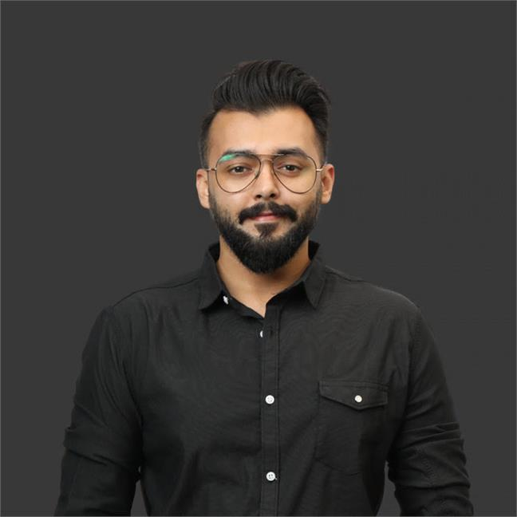

Ahmed Raza Jaswal
Summary
Striving to improve and meet expectations by learning and working on my skills. Passionate about delivering excellence and hard work to clients.
Education
I have done my Bachelors in Electrical Engineering BS(EE) (2010 - 2014) from FAST University, Lahore. My electives courses specialized in Computer and Telecom.
My High School/College diploma is from Punjab College Lahore (2008 - 2010)
Work Experience
I have been working as a VoIP Engineer since graduating and my history of organizations and performed roles are compiled below fyr:
- Working as a VoIP (Voice over IP) Consultant in i2c Inc. from 2019 - Current date. Responsibilities include:
- Managing and configuring asterisk PBX for internal use and client call centers.
- Resolving configurational and technical issues regarding Telephony system.
- Managing Voice and SMS services throuugh different vendors.
- Monitoring and pro actively resolving any issues.
- Worked and VoIP Engineer for Onewood Lahore (2018) and in charge of managing their Grandstream PBX UCM.
- Worked as Network Support Engineer in Innovedia Technologies (2015-2017) and managed proactive monitoring and voice services from vendors.
- Spent 5 months as a Electrical Design Engineer (2015) at Flowtronix (ltd)
Skills
Throughout my professional carrer, I have acquired and honed following skill set:
- Good with Microsoft Tools like Powerpoint, Excel, Word and Visio.
- VoIP/SIP troubleshooting skills through Wireshark and SIP traces.
- Good Communication and writing skills.
- Hands on experience with managing Network Swtiches, configuring IP Phones and configuring PBX's.
- Ability to work under stress and calmly analise and resolve issues.
- Good grasp of Linux Systems (CentOS and RedHat)